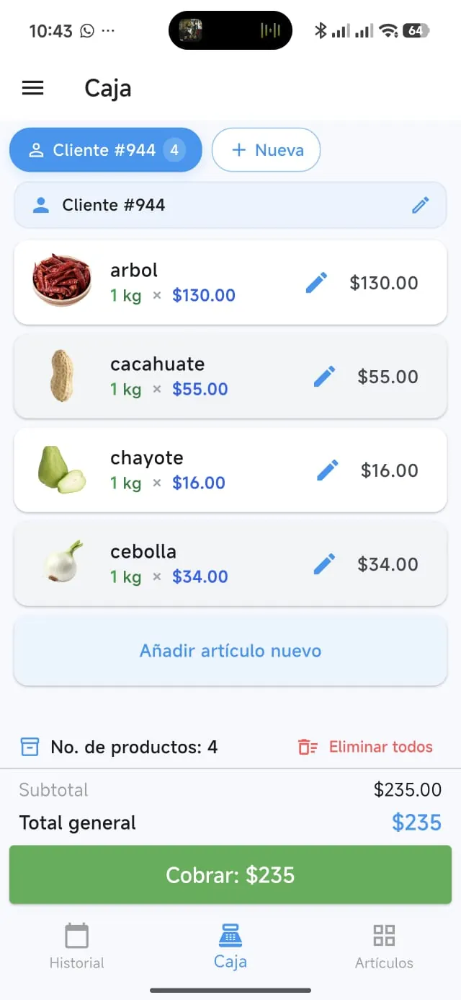

Junio de 2026
KiwPOS — Aplicación de ventas
Digitaliza notas de venta antes elaboradas a mano, registra artículos, calcula totales y genera tickets para impresora térmica.
Repositorio del proyecto: pendiente de publicación